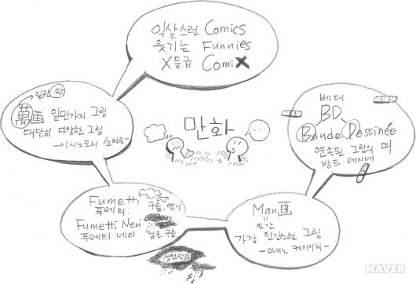
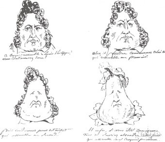

세계만화백과사전(The World Encyclopedia of Cartoons, 1980)에서 모리스 혼은 “그 안에 완성된 하나의 생각을 갖고 있는그림은 어떤 것이라도 만화라 불릴 수 있다.”고 말했다. 그것은 스콧 맥클라우드의 “만화라고 불리는 예술형식(즉, 매체)은 어떤 생각이나 형상을 담는 그릇이다”라는 말과 일맥상통한다.
만화의 어원을 통해 그 성격을 알아보면, 우선, 카툰은 이탈리아어인 카르토네(cartone), 즉 ‘커다란 종이 한 장’에서 파생된 것으로 예술작품을 만들기 위해 실물크기로 종이에 그리는 예비적인 스케치를 의미하였다. 만화가 오늘날과 같은 의미로 사용된 것은 1814년 영국의 유명한 만화잡지 《펀치(Punch)》의 창간부터였다. 당시 영국의 신축 의사당이 완공되면서 빅토리아 여왕의 남편 알버트 왕자는 새로운 의사당 건물의 거대한 벽면장식을 위한 초벌그림을 현상 모집했다. 출품된 작품 중에서 수준이 형편없이 낮은 작품들이 있었는데, 만화잡지 《펀치》는 ‘펀치 카툰’이란 제목으로 이러한 작품들을 희화해서 게재하였다. 이것이 선풍적인 인기를 끌면서 카툰이란 용어가 정착되었다. 이것은 카툰이 인쇄물의 도래와 함께 대량생산이 가능한 스케치로 광범위하게 유포된 매체로서의 의미를 갖는 기념비적인 일이었다.
또한, 영국에서 만화가 혁명적으로 발전했다는 증거는 익명의 목판화로 종이나 양피지 위에 제작된 전단지에서 찾을 수 있다. 공개처형의 내용을 담은 전단지는 점차 그 성격이 변하면서, 유머를 다루는 재미있는 그림, 당시 세태를 풍자하는 그림 등이 등장하였는데, 사람들은 이러한 재미있는 내용의 그림을 ‘익살스럽다’는 의미로 코믹컬스(comicals) 또는 코믹스(comics)로 줄여 불렀다. ‘코믹(comic)’이란 단어가 들어간 최초의 출판물은 영국인 알프레드 하먼즈워즈가 1890년에 발행한 잡지 《코믹 커츠(comiccuts)》를 통해서였는데, 이처럼 영국은 잡지를 통해 만화가 발달한 나라로 신문의 연재만화라는 전혀 다른 경로로 만화가 성장한 미국과는 출발에 있어서 큰 차이를 가진다.
미국 만화는 1896년 2월 16일 뉴욕의 일간신문 《뉴욕월드》의 일요판 특별부록에 리처드 팰튼 아웃코트가 그린 한 컷 만화〈옐로 키드(Yellow Kid)〉로부터 시작되었다. 그게 시발점이 되어 만화는 거의 일요일에 배포되었고, 이 일요판 컬러 신문부록을 퍼니 페이지즈(funny pages)라고 했기 때문에 신문에 실린 만화를 처음에는 퍼니스(funnies)라고 불렀다. 그러다가 1907년부터 평일 판에 칸이 연속된 만화가 등장하였고 이러한 스타일의 만화는 연속된 모양의 우표와 비슷했기 때문에 코믹 스트립스(comicsstrips)라는 명칭으로 불렸다.
일반적으로 과장된 인물화로 알고 있는 캐리커처는 이탈리아어의 ‘짐 싣기’, ‘부담주기’라는 의미의 중세 이탈리아어 카리카투라(caricatura)에서 유래한 말로 ‘과장한 모습과 의미를 덧붙인다.’는 뜻이다. 1831년 프랑스에서는 《카리카튀르(CARICATURE)》라는 주간 풍자 신문이 발행되었는데, 편집장인 샤를르 필립퐁의 아이디어로 당시 프랑스의 국왕 루이 필립을 멍청이, 얼간이라는 의미의 서양 배(梨), 포아르(poire)로 그려 큰 인기를 얻었다. 이 단어는 현재 일부 유럽지역에서는 시사만화를 가리키는 용어로 사용되기도 한다.
